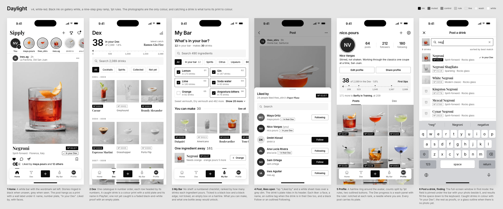
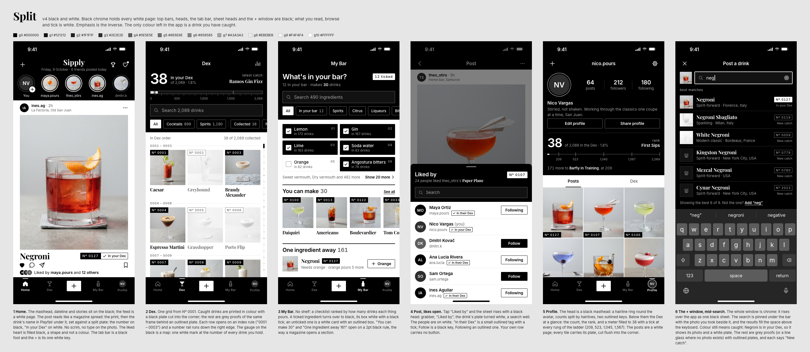
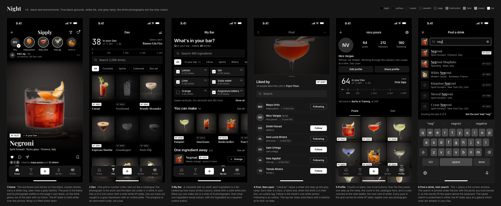

sipply v4 · 9 october 2026 · three monochrome directions, judged
Black and white, three ways
Jan asked for the whole app to go black and white and look sleek. Three directions were mocked at 440 × 956 across the same six screens: Home, Dex, My Bar, Post with likers, Profile and the + window mid-search. All use real drink names and numbers, and the drink photos are the only colour in each. Every ratio quoted in the specs was re-computed here and holds.
the pick
Daylight (white), 8.8. It is the calmest of the three and the photos look best in it. Catching a drink turns its print from a black-and-white proof to colour, which tells the app's story without a single hue in the interface. Split came very close (8.7) and should give it four of its moves. Night is the most dramatic, but its re-lit photos show a cut-out halo at full size, and it locks the app into dark only.
| Criterion (1–10) | Daylight | Split | Night |
|---|---|---|---|
| Sleek and good-looking | 8 | 9 | 8 |
| Truly black and white | 9 | 10 | 9 |
| Legibility + WCAG AA | 9 | 9 | 8 |
| Keeps every feature legible | 9 | 8 | 7 |
| Buildable in RN without lag | 9 | 9 | 8 |
| How the colour photos sit | 9 | 7 | 6 |
| Overall (mean) | 8.8 | 8.7 | 7.7 |
Daylight
white-ledBlack ink on gallery white, a nine-step grey ramp and 1pt rules. The photos get a neutral daylight re-bake, and a drink you have not caught yet shows as a faded black-and-white proof.

Works
- The Dex is the clearest of the three. A colour print with a solid plate and a Playfair name means caught; a grey proof with an empty plate and an Inter name means not yet. That is three cues, none of them colour.
- The feed print plus the wall label under it (name, Nº plate, "In your Dex") removes every word on a photo and both scrims.
- The index rule (0001 – 0003), the ruler gauge with rank notches, and the wash Dex panel on Profile keep Brass's function without the costume.
- No new font. Shadows only on the tab bar and sheet, neither of which scrolls.
Weak
- The calmest direction can read as plain iOS light. The character comes from the proofs and Playfair, so neither can be cut.
- Ticked vs unticked ingredient tiles differ only by edge weight and the box itself.
- Americano sits in "You can make" as a faded proof, which looks like "unavailable".
- The + window has no way out when the search misses ("Add "neg"").
- Needs a new daylight bake script for the 162 photos (proven in the mock).
Split
black chrome, white pagesEach white page is held between black chrome: the bars, every tab's head, the docked tab bar, the sheet heads and the whole + window. Emphasis is always the inverse. The photos are the studio masters, used as they are.

Works
- The most editorial and the most purely black and white: an 11-step R = G = B ramp and only two inks.
- Ticked ingredients become solid black cells, the strongest tick reading of the three.
- Plates cut flush into the tile corners, the number rail on the Dex, and chip counts.
- The simplest photo pipeline (no re-light), no shadows at all, no new font.
Weak
- The black heads take a third to half of each tab (about 330pt on the Dex) before any content.
- Not-yet proofs nearly vanish on white (Grasshopper, Porto Flip).
- Bright studio thumbnails glare on the black + window.
- Docks the floating tab bar (a structure change) and drops the style · origin line under the feed name.
Night
black-ledTrue black grounds, white text and one grey ramp. Each photo is re-lit so it fades to exactly #000000 and the drink glows out of the page. Each view has one white object, and it is the thing to press.

Works
- The most atmospheric: a full-bleed feed and the bar at night. On OLED most pixels are off.
- JetBrains Mono for Dex figures gives the numbers an instrument feel.
- The + window is the most finished: matched text underlined, and "Showing the best 6 of 9 · Not the one? Add".
- The most thorough spec on Increase Contrast, Smart Invert and the dark keyboard.
Weak
- At hero size the re-lit photos show a pale matte halo around the glass (Negroni, Paper Plane). The drink looks pasted on.
- Not-yet ghosts go almost black (Porto Flip). Elevation steps (#0E0E0E vs #171717) are close to invisible.
- Drops the Dex index rule. Profile shows 64 in the Dex while the Dex screen says 38.
- Dark only, for good: the photo bake rules out a light mode. Adds a third font (+120 KB).
Grafts onto Daylight
- From Split: ticked My Bar tiles fill solid ink (#0A0A0A) with a white tick box. Unticked tiles stay white with a 1pt hair edge.
- From Split: the Dex number rail on the right edge (a 1pt hair rule with control ticks) for jumping to the back of the book.
- From Split: muted counts in the filter chips ("Cocktails 899", "Spirits 1,190", "Collected 38").
- From Split: try
--grade studio(the masters as they are) against--grade daylighton the QA sheet. If the walls already measure neutral, skip the new daylight.py. - From Split + Night: under the + window results, add "Showing the best 6 of 9 · Not the one? Add "neg"". Not-yet rows get a right-aligned "New catch" caption to mirror "In your Dex".
- From Night: in "You can make" and "One ingredient away", show the photo in colour and let the empty plate alone say "not caught". Proofs stay a Dex-grid idea.
- From Night: put
accessibilityIgnoresInvertColorson every photo, and add Increase Contrast steps (muted #5C5C5C → #404040, control #8A8A8A → #6B6B6B). - From Night: keep its token set as Daylight's documented dark twin (night #000000, surface #0E0E0E, raised #171717, ink #F5F5F5, muted #A3A3A3), so a later dark mode starts from a ramp already checked for AA.